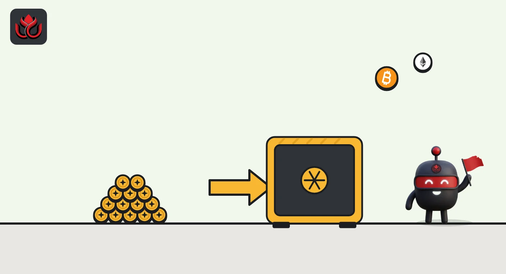
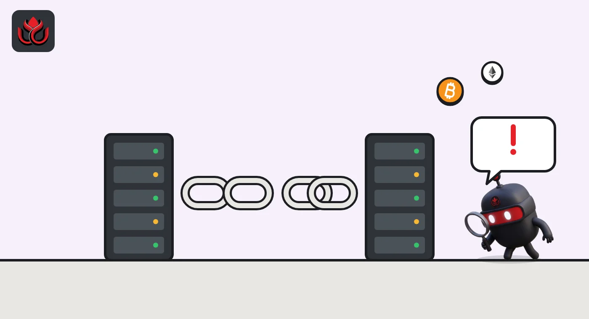

Zcash NU7 makes blocks 3x faster around November 5. Old nodes will split off
Zcash's NU7 hard fork activates at block 3,543,405, expected around November 5, 2026. It cuts block time from 75 to 25 seconds without changing supply, sends 60% of fees to a reserve and invalidates version 4 transactions. Nodes that do not upgrade split off.
Key points
- Zcash's NU7 network upgrade activates on mainnet at block height 3,543,405, which the project's own timeline puts around November 5, 2026.
- The target time between blocks falls from 75 to 25 seconds. Block rewards are divided by three and halving intervals tripled, so daily ZEC issuance and the 21 million cap stay the same.
- 60% of every block's transaction fees will go to a reserve instead of miners, version 4 transactions become invalid and coins left in the old Sprout pool become unspendable.
 What DeepSea's data shows
What DeepSea's data shows
Traders are adding to ZEC ahead of the upgrade. DeepSea's long/short page showed ZEC with the largest increase in net positioning of any asset on November 2, up $20.70 million, while bitcoin and ether exposure fell. Its traders held $120.13 million of ZEC longs against $51.20 million of shorts.
Zcash also shows up in hack tracking. DeepSea's Bitget hack page lists Zcash among the four chains the attackers used to move the $387.50 million taken in September.

Data: DeepSea (desea.io), checked November 2, 2026, 7:55 a.m. ET.
What is happening and when
Zcash, the privacy-focused cryptocurrency, is about to make its blocks three times faster. Its NU7 network upgrade is a hard fork, a change to the rules that every node must adopt to stay on the same chain. The Zcash Foundation released Zebra 7.0.0, the node software that supports NU7 on mainnet, on October 22, 2026. It says the upgrade activates at block height 3,543,405, around November 5, 2026.
The height was written into Zebra's code in a pull request opened on October 20 and merged on October 21. The same number appears in ZIP 259, the formal deployment document for NU7 (ZIPs are Zcash Improvement Proposals). That document is still marked "Proposed".
Node operators get no grace period. The foundation says every mainnet operator must upgrade before NU7 activates to stay on the consensus chain. Nodes that do not upgrade will reject the new rules and split off from the rest of the network.
Timeline
A Zcash developer posts the NU7 timeline on the community forum: code complete September 30, testnet October 6, mainnet decision October 20, mainnet November 5.
Zebra 7.0.0-rc.0 sets NU7 for testnet at height 4,465,026, expected around October 6.
The mainnet activation height, 3,543,405, is added to Zebra's code and merged.
Zebra 7.0.0 ships with mainnet NU7 support.
NU7 activates on mainnet at block 3,543,405.

Faster blocks, same supply
The headline change is ZIP 218, one of the rule sets bundled in ZIP 259, which cuts the target spacing between blocks from 75 seconds to 25 seconds. In practice a payment should get its first confirmation in about a third of the time.
Three times as many blocks would normally mean three times as many new coins. NU7 avoids that. The Zcash Foundation says block rewards are divided by three and the intervals between halvings are tripled, so the amount of ZEC created per day does not change. The four-year halving rhythm and the 21 million supply cap also stay the same.
NU7 also adds per-block limits on shielded activity in the Orchard, Ironwood and Sapling pools (shielded means the sender, receiver and amount are encrypted). Even with those limits, the foundation says throughput for Orchard, Zcash's newest shielded pool, rises from 2.9 to 6.6 transactions per second, and the worst-case bandwidth a spam attack could force on syncing wallets falls by about 37%.
Zcash target time between blocks
seconds
Source: Zcash Foundation, Zebra 7.0.0 release (October 22, 2026)
Where the fees go now
The second big change touches miners' income. Under ZIP 235, which ZIP 259 describes as removing 60% of transaction fees from circulation, that share of each block's fees goes into a reserve, and miners keep 40%. A separate rule, ZIP 237, calls this the Network Sustainability Mechanism: the reserve is paid back out in small amounts over time. The Zcash Foundation says that reissuance starts at mainnet height 8,939,664, many years after NU7.
For mining pools this is a software change as much as an economic one. The foundation tells pools to request a new block template rather than change the transactions in one themselves, and says coinbase transactions (the transaction that pays the miner) can claim only the 40% share.

What stops working
Some old transactions and coins are cut off. ZIP 259 says that once NU7 activates, all version 4 transactions are invalid, including ordinary transparent and Sapling ones, while versions 5 and 6 remain valid. Even a version 5 or 6 transaction signed before activation will not be valid after it, because its signature commits to the network branch. Because of that rule, funds still sitting in Sprout, Zcash's original shielded pool, become unspendable. Forum participants warned on September 28 and 29 that any recovery would have to come from some other method, and the ZIP offers no replacement format.
Software built around zcashd, the older Zcash node, also has a deadline. The Zcash Foundation says earlier builds of its zcashd compatibility sidecar cannot follow mainnet past NU7; operators need version zebra-compat-v1.3.0. Wallets and exchanges must also handle new limits on address queries: requests that match more than 100,000 results return an error, and one call can include at most 10,000 addresses.
Zebra 7.0.0 also fixes seven security advisories. It has a shorter life than usual: the foundation says "This release is supported for 8 weeks instead of the usual 12."
Who needs to do what
Most holders do not run nodes and have nothing to do beyond using an up-to-date wallet. Node operators, pools, exchanges and wallet providers must upgrade before block 3,543,405. Zebra's database also moves to a new format (v29) that version 6.x cannot read, so going back would mean a full resync. The foundation advises backing up the old v28 data first for anyone who wants a fallback.
The NU7 timeline thread also shows testnet bumps: on October 13, a developer working on the WebZjs wallet library reported that an unmodified build could not sync on the NU7 testnet, and on October 15 the project's manager said a deployment was planned for the next day.
LC Insight analysis
This section is our reading of the facts above, not a statement of fact.
- Over time the 60% fee reserve matters more than faster blocks. It changes who benefits if Zcash usage grows.
- Exchanges decide whether users feel the speed. With 25-second blocks the same confirmation count takes a third of the time, so shorter waits depend on their settings.
- An eight-week support window and a hard cutoff leave little room for slow operators. Any split or stalled service would show up in the days around November 5.
What's next
- Block 3,543,405 and whether block times settle near 25 seconds afterward.
- Exchange notices on ZEC deposits and confirmation counts around activation.
- Whether ZIP 259 moves from Proposed to Final after activation.
- Any plan for coins stranded in the Sprout pool.
Disclaimer. This article is based on public information and the sources listed below as of the update time shown. It is for information only and is not investment, legal or tax advice. Figures may change as companies and authorities publish new data.
Sources
- Zcash Foundation, Zebra 7.0.0 Release (October 22, 2026)
- Zcash Foundation, Zebra 7.0.0-rc.0: NU7 Arrives on Testnet (October 2, 2026)
- ZIP 259: Deployment of the NU7 Network Upgrade
- Zebra GitHub, pull request #11830: set NU7 Mainnet activation height (merged October 21, 2026)
- Zcash Community Forum, NU7 Timeline (September 17, 2026)